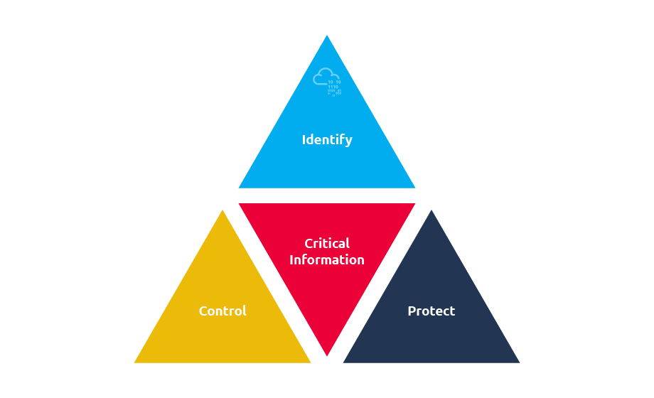
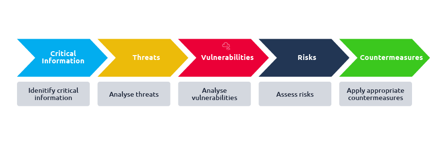

Red Team OPSEC
OPSEC, also known as Operations Security, is primarily defined as a systematic process which denies information to adversaries regarding capabilities and intentions by identifying, controlling and protecting generally unclassed evidence of the planning and execution of sensitive activities.
OPSEC process has five elements:
Identify critical information: “Critical information includes, but is not limited to, red team’s intentions, capabilities, activities and limitations.”
Analyse threats: Threat analysis refers to identifying potential adversaries and their intentions and capabilities.
Analyse vulnerabilities: An OPSEC vulnerability exists when an adversary can obtain critical information, analyse the findings, and act in a way that would affect your plans.
Assess risks: “Risk assessment requires learning the possibility of an event taking place along with the expected cost of that event.”
Apply appropriate countermeasures: Countermeasures are designed to prevent an adversary from detecting critical information, provide an alternative interpretation of critical information or indicators (deception), or deny the adversary’s collection system.
Denying any potential adversary the ability to gether information about our capabilities and intentions is critical to maintaining OPSEC.OPSEC is a process to perform the following:Identification, Control and Protection regarding any information related to the planning and execution of our activities.


Critical Information Identification
Red teamers define critical information as anything that, if discovered by the blue team, could compromise the mission. This includes not only sensitive data but also operational details like intentions, tools, and infrastructure. To identify such information, red teams must think adversarially—asking what the blue team would need to know to stop them.
Examples include client data (names, roles, infrastructure), red team identities and plans, TTPs, OS or cloud services used, C2 frameworks, public IPs, registered domains, and phishing sites. Following the Principle of Least Privilege is essential to limit exposure, ensuring only those who need access have it.
Threat Analysis
The red team’s primary objective is to emulate an actual attack so that the blue team discovers shortcomings and is better prepared for real threats. Malicious third-party players may have different intentions and capabilities, and could potentially pose a threat.
This could just be someone random scanning the systems and randomly looking for low-hanging fruit like an unpatched exploitable server, or even a more capable adversary targeting the company itself or the company’s client systems.
As such, intentions and capabilities of third party actors could vary, and they can turn into adversaries.
The definition of a threat to our operation would be:Threat = adversary + intent + capability
Vulnerability Analysis
After identifying critical information and analyzing potential threats, the next step in the OPSEC process is analyzing vulnerabilities. In this context, vulnerability doesn't refer to software flaws but to any weakness in operational security that allows an adversary to obtain and act upon critical information in a way that could disrupt the red team’s mission.
An OPSEC vulnerability exists when actions taken by the red team unintentionally reveal key details that the blue team or another adversary can detect, interpret, and use to their advantage. For example, if a red team uses the same IP address for scanning (via Nmap), phishing campaigns, and exploitation (via Metasploit), a single detection event could compromise the entire operation. Blocking that one IP would cut off all related activities, including access to a phishing server or ongoing exploitation attempts.
Vulnerabilities can also arise from poor infrastructure security. A database collecting credentials from phishing victims, if left unsecured, could be discovered and exploited by a third party. This would not only compromise the operation but potentially expose sensitive credentials to real attackers, harming the very organization the red team is trying to help.
Even seemingly minor actions, like a red team member mentioning the client on social media, can create vulnerabilities. If the blue team or threat hunters are monitoring public sources, they could gain insight into the red team's presence or tactics and use that information to strengthen their defenses.
Risk Assessment
After analyzing vulnerabilities, the fourth step in the OPSEC process is conducting a risk assessment. According to NIST, a risk assessment involves identifying potential risks to an organization's operations, assets, and reputation that may arise from the operation of an information system. In the context of OPSEC, this means evaluating how likely it is that a vulnerability will be exploited and what the impact would be if it were.
A proper risk assessment considers both the likelihood of an event occurring and the consequences of that event. It focuses on the adversary’s ability to exploit identified vulnerabilities and helps determine the overall level of risk. Once that level is understood, appropriate countermeasures can be planned and implemented. When choosing a countermeasure, three things must be weighed: how effective it is at reducing the risk, whether its cost is justified by the potential damage prevented, and whether it might expose information to the adversary.
Returning to the previous example of using the same IP for scanning, exploitation, and phishing: this was identified as an OPSEC vulnerability. To assess the risk, one would need to understand how likely it is for any of these activities to be detected. If the target organization uses a SIEM, detection is more likely, as SIEMs provide centralized, real-time monitoring across various systems. In this case, the risk is high because detection of one activity could lead to the blocking of all three. However, if the organization has limited monitoring capabilities, the same vulnerability might carry low risk.
Additional Practical ExamplesIn this task, we apply all five OPSEC elements to a specific red team scenario:
the programs,
operating systems,
and virtual machines being used during an operation.
We begin by identifying the critical information. In this case, the combined details of the OS, VM, and tools used by the red team are considered sensitive. If detected, these could link various red team activities back to a single operator or campaign.
In the threat analysis phase, we recognize that the blue team is actively monitoring for abnormal or malicious behavior. Depending on the services the red team connects to, system details like the OS version, program names, and VM hostnames could be logged and flagged by defenders.
Vulnerability analysis reveals that using a rare or easily identifiable OS, or keeping default hostnames like “kali2021vm” or “AttackBox,” makes it easier for defenders to spot and correlate red team activity. Similarly, tools like Nmap or unusual user agents used in scans can leave behind clear fingerprints in logs.
The risk level depends on the environment. If red team activity involves connecting to VPNs or monitored services, there’s a high likelihood that identifying details will be logged. In environments with active defenders and log aggregation (like SIEM), the risk of exposure is even higher.
To mitigate this risk, countermeasures should be applied. This includes changing VM hostnames to blend in with the client’s naming conventions, customizing user agents in tools like Nmap, and potentially modifying or obfuscating the OS to avoid detection. For example, using Nmap’s --script-args http.useragent="CUSTOM_AGENT" helps avoid detection from the default "Nmap Scripting Engine" string in logs.